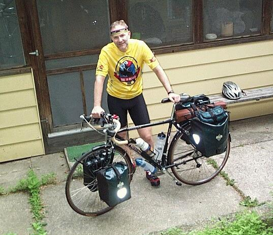
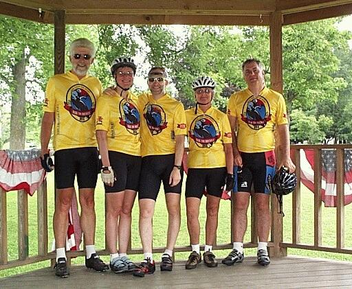

|
The Digression Departs |
||
| July 7, 2001 Madison, WI Three of us, Barb, Pat, and I left Madison at about 8 A.M. We would be joined by Dan and Jack in Mt. Vernon. Dan would head back for home at County Road F while the rest of us would continue on to Mineral Point for the night. Evan and Adam would join us later that night for dinner at the Brewery Creek Brew Pub. The next day I would continue my bicycle road trip to Seattle alone. All of us plus other friends recently went to Colorado for the 2001 Ride the Rockies. It is joy to have such good friends. | Q. Why are you biking east to west
-- against the prevailing winds? A. Besides being longer, going east from Madison to Seattle requires several ocean crossings. Q. What's the purpose of your journey? Q. What's the purpose of your road trip? |
|
 |
 |